Kumamoto
熊本
À bord du super train "Aso Boy!" avec sa salle panoramique et son élégante voiture bar
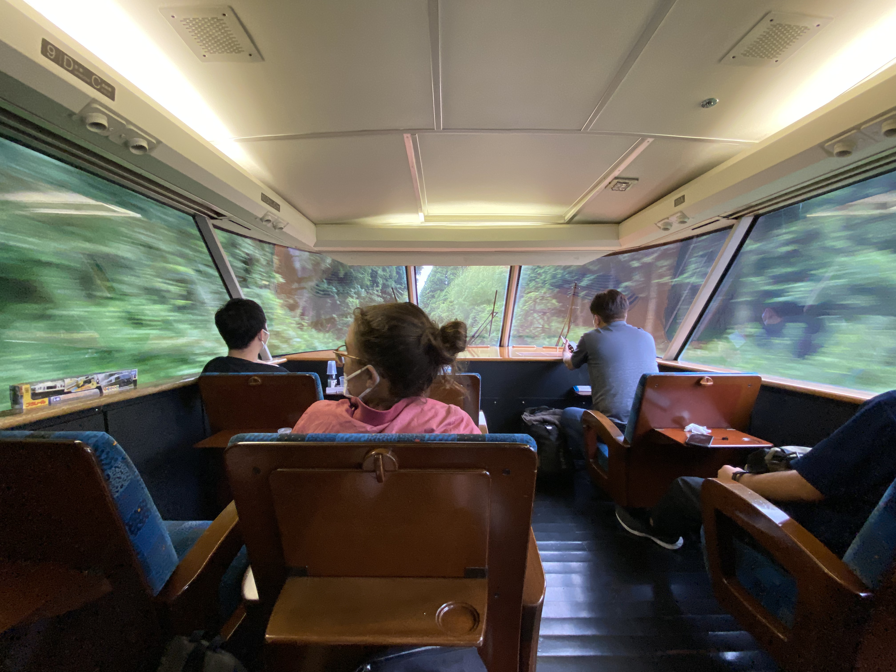
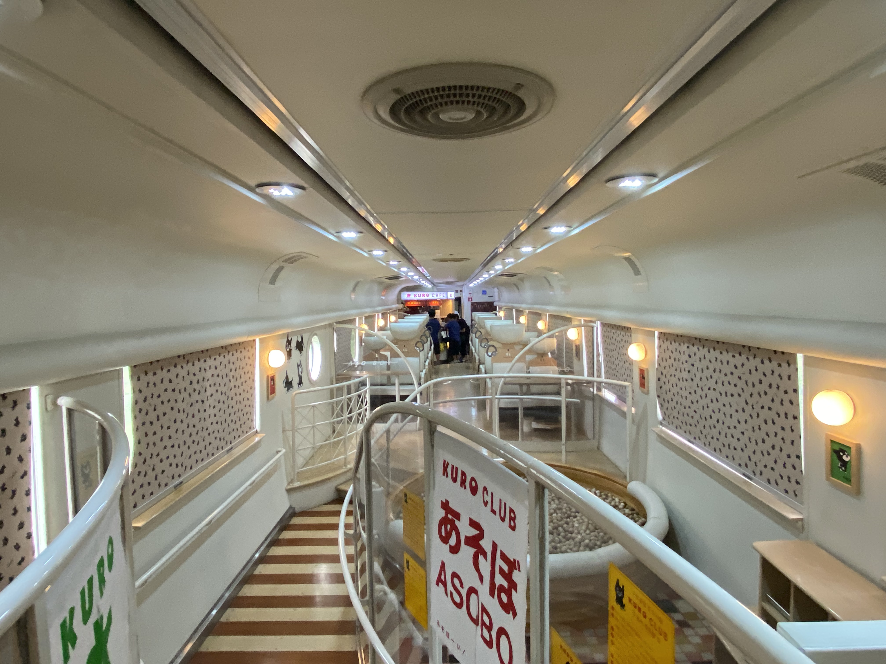
Arrivée à Kumamoto sous la pluie
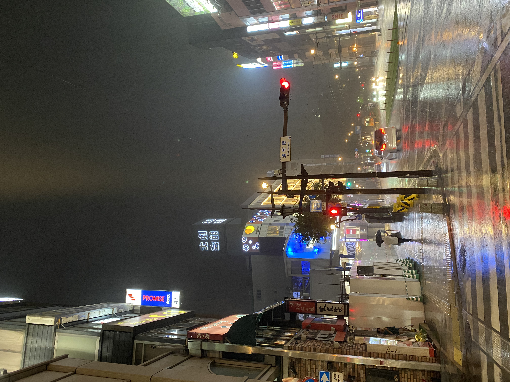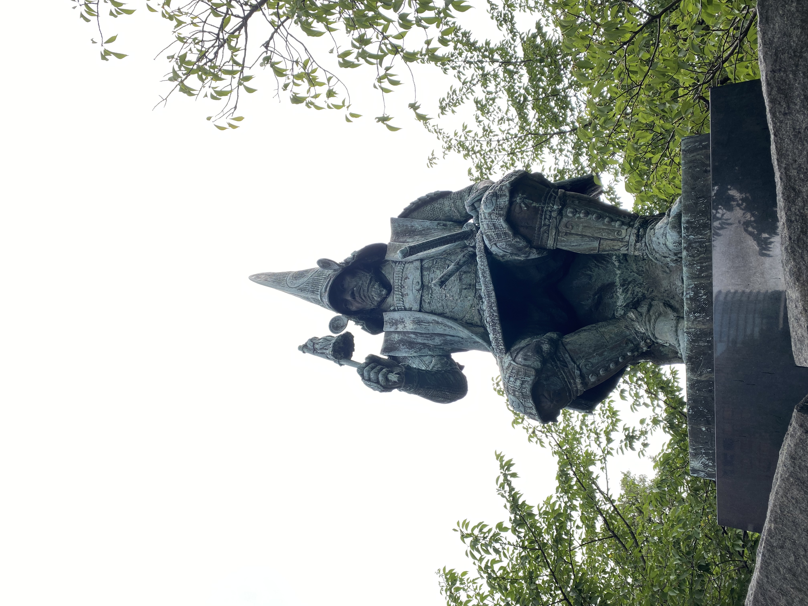
Le château de Kumamoto, partiellement détruit par un tremblement de terre en 2016 et refait à neuf depuis.
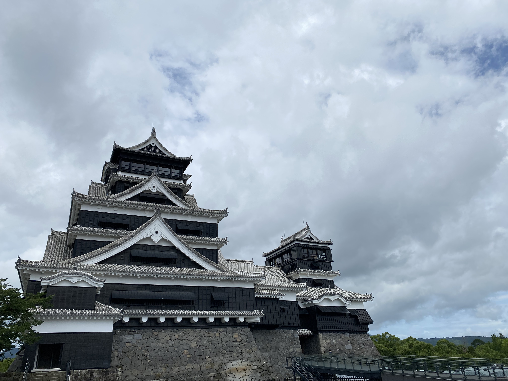
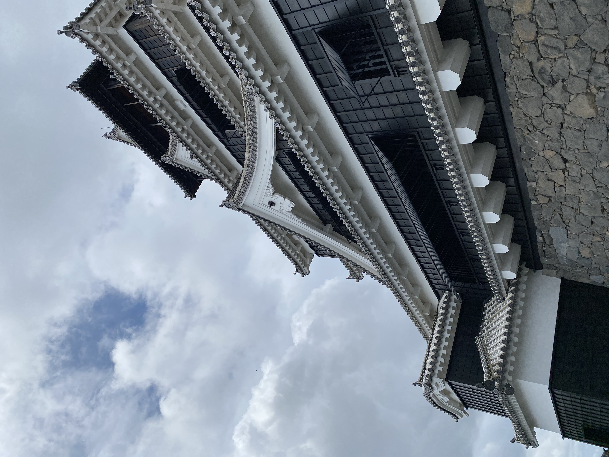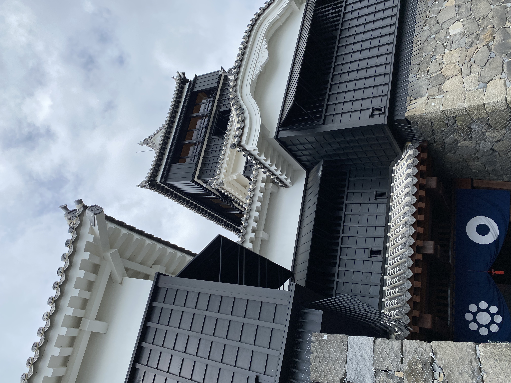
 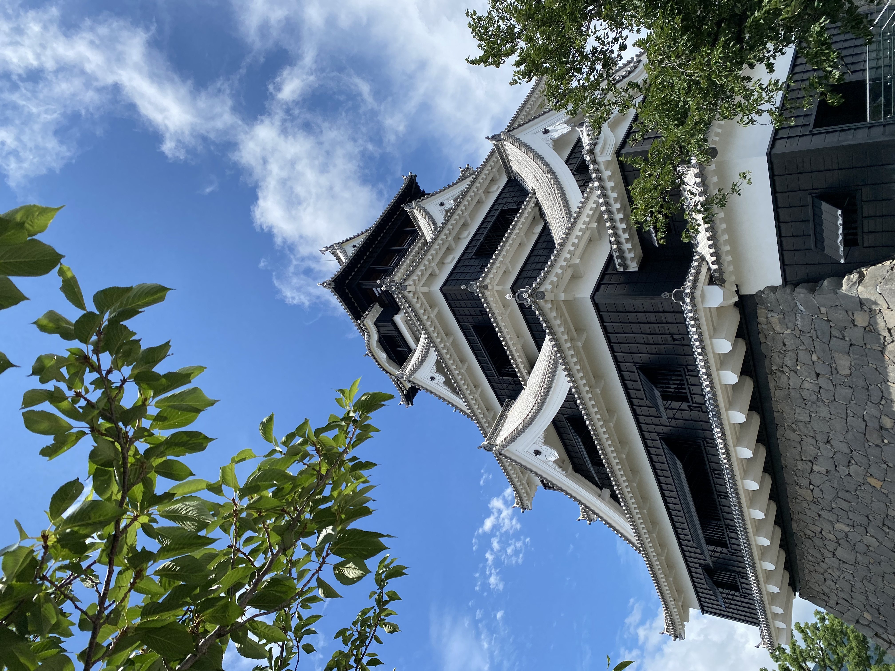
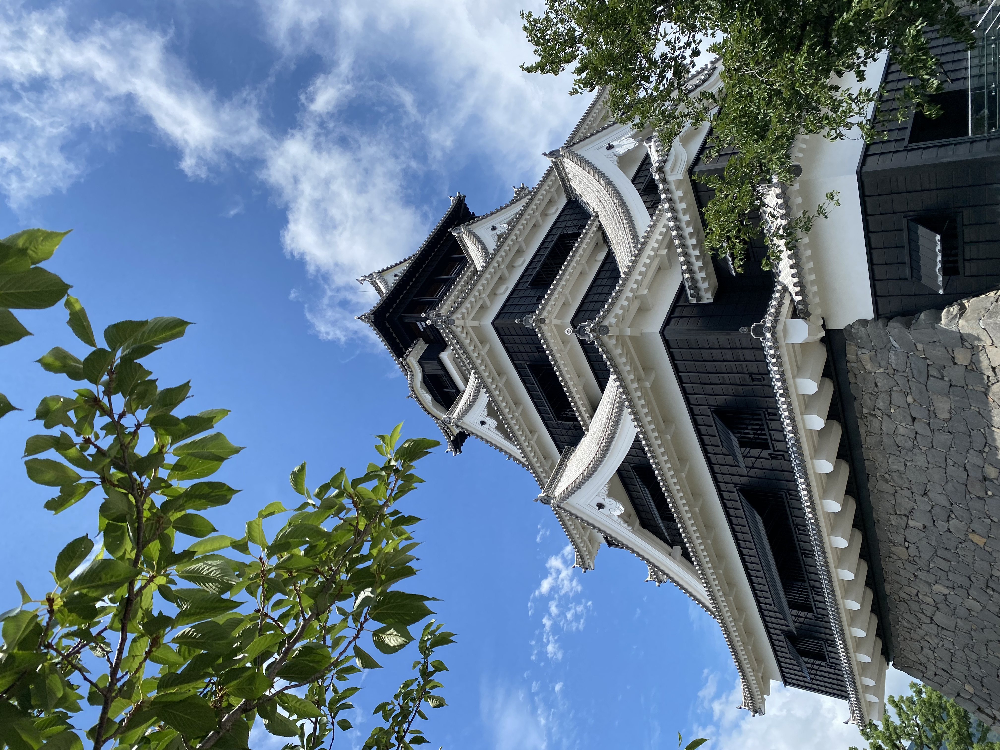
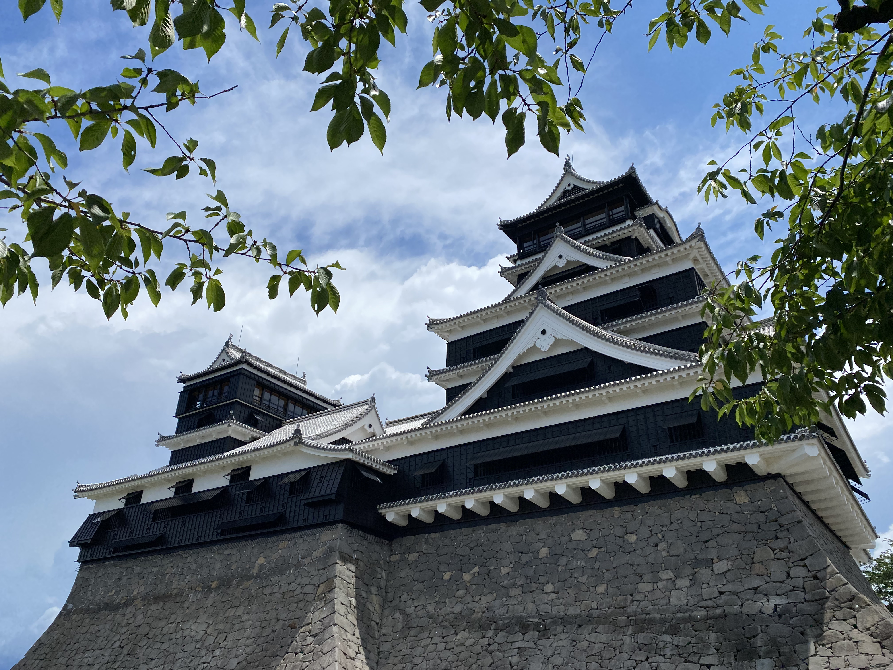
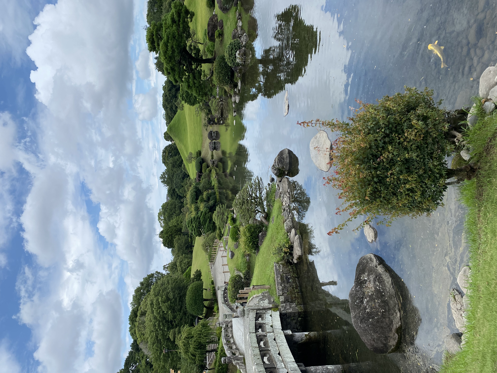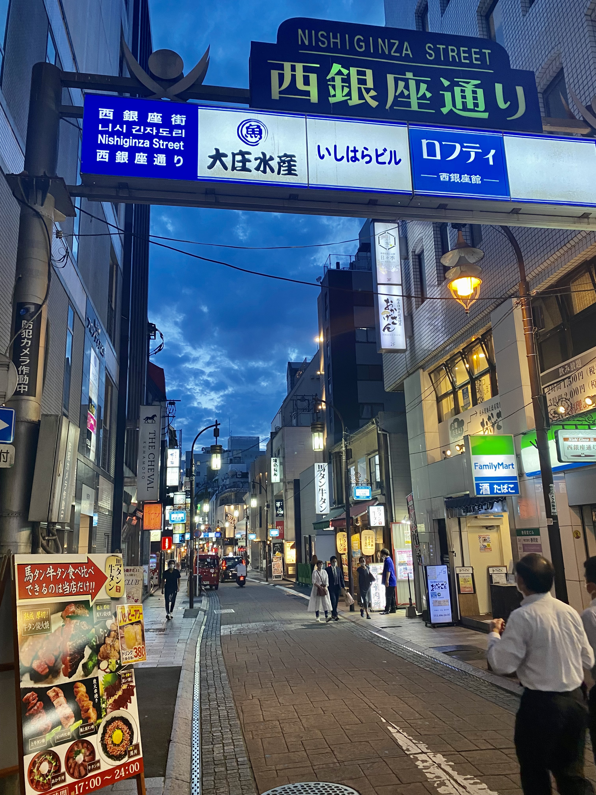